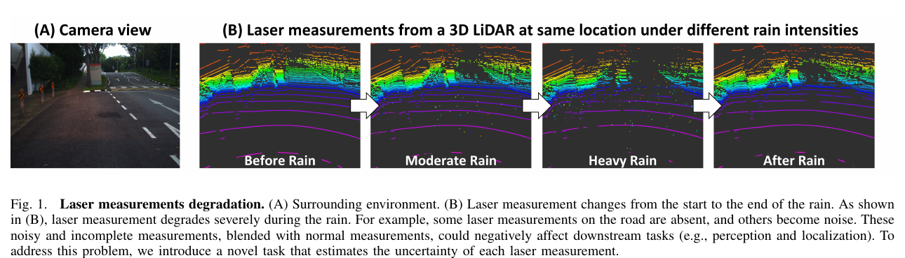
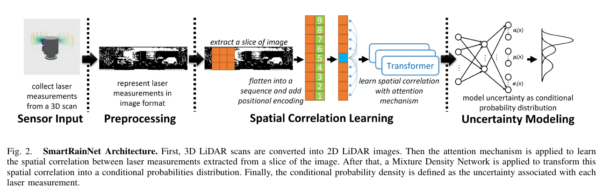
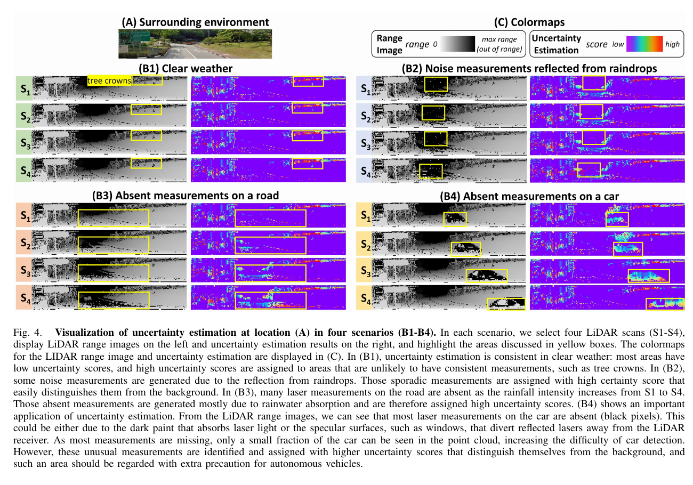
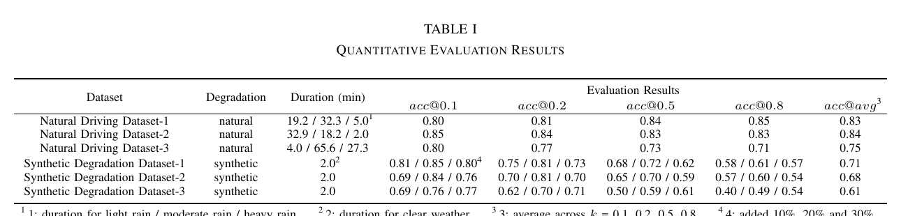

Robotics Research Reader · Stage 1
SmartRainNet: Uncertainty Estimation For Laser Measurement in Rain
材料覆盖范围：完整核对论文摘要、引言、相关工作、方法、两类数据集、定性与定量实验、应用示例、结论，以及 Fig. 1–6 和 Table I。原文件为
SmartRainNet_Uncertainty_Estimation_For_Laser_Measurement_in_Rain.pdf。本页只还原当前 PDF 的 Problem → Gap → Observation → Method → Experiment 故事线；不读代码、不借助外部资料补写，也不做迁移或审稿判断。一、论文一句话在做什么
概括作者不直接恢复或删除雨天退化点，而是学习晴天可靠激光量测的条件概率分布，为每个有效或缺失量测给出不确定性分数，使下游感知、定位或传感器性能评估能够按量测可信度采取不同处理。 （Abstract；Sec. I；Sec. III）
二、Research Problem
具体问题
在雨天找出 3D LiDAR 中不可靠的单个激光量测，并为每个量测估计不确定性，而不是只给整帧一个退化分数。 （Sec. I；Sec. II 第 2 段；Sec. III 开头）
发生场景
自动驾驶在雨天运行时，雨滴反射、雨水吸收以及目标表面的暗色或镜面性质会造成噪声点与缺失量测。 （Fig. 1；Sec. IV-C；Fig. 4）
为何重要
感知与定位直接消费受损量测时，其性能会下降；系统还难以知道当前传感器可靠性并据此调整驾驶策略。 （Sec. I 第 1、3 段）
导致后果
道路点可能消失、雨滴产生散乱回波，暗色或高反车辆只留下少量点，从而增加定位不稳定与目标漏检风险。 （Fig. 1；Sec. IV-C；Fig. 4 B2–B4；Sec. IV-E）

三、Existing Methods & Gap
| 作者讨论的方法 | 原本怎么解决 | 作者指出的不足 | 为何影响当前问题 |
|---|---|---|---|
| 数据恢复 | 用生成式模型等恢复受损数据。 | 可能生成场景中原本不存在的伪影。 | 恢复结果本身可能引入新的不可靠信息。 （Sec. I 第 2 段） |
| 数据移除 | 根据雨雪噪声生成过程识别并删除受损量测。 | 需要正确建模传感器、环境与天气的复杂交互，作者认为实际中几乎不可行。 | 噪声模型不准时难以可靠判断哪些点应删除。 （Sec. I 第 2 段） |
| 在恶劣天气数据上直接训练下游任务 | 在雨天数据上训练并以检测 AP 等任务指标优化。 | 需要大量标注，而恶劣天气难预测、难采集；并且通常不输出自身的退化信息。 | 系统既难获得足够训练数据，也难感知当前驾驶能力。 （Sec. I 第 3 段） |
| 受控/仿真退化分析与整帧异常检测 | 分析强度、距离、回波数变化，或用异常检测为整帧 LiDAR 估计退化分数。 | 多数定量研究使用固定目标、受控或仿真环境；整帧分数不能定位到单个量测，异常样本选择还依赖主观标准。 | 无法向下游模块提供逐量测可信度。 （Sec. II 前两段） |
作者认为真正缺少的东西
概括现有路线缺少一种无需主观挑选异常样本、能在真实驾驶数据上学习晴天正常分布并输出逐激光量测不确定性的退化评估方式。 （Sec. II 第 2 段；Sec. III 开头）
四、Core Observation / Insight
观察 1：晴天量测也具有多模态性
激光束在边缘或多径场景可被多个物体部分反射，因此同一位置可能出现多个有效回波；Fig. 3 中标牌边缘与灌木区域的累计距离直方图出现两个峰。 （Sec. III-C；Fig. 3, PDF p. 3）
如何引出算法：作者据此选择 Gaussian mixture，而不是单峰分布来描述量测。 （Sec. III-C；Eq. (2)）
观察 2：相邻量测相关，但雨致退化是意外事件
空间邻近的激光量测具有相关性；若某量测在邻域条件下概率密度低，它更可能是随机雨滴交互造成的噪声或缺失量测。 （Sec. III-B–C）
如何引出算法：先用 attention 学习邻域相关性，再用条件混合密度网络估计该量测的相对似然。 （Fig. 2；Eqs. (1)–(2)）
概括核心 insight 是：先从晴天数据学习“给定空间邻域时，正常量测可能落在哪里”的多峰分布，再把低条件概率密度当成高不确定性；这样不需要预先定义雨噪声的完整生成模型。 （Sec. II 末段；Sec. III）
五、Method：只看宏观逻辑
Input：3D LiDAR scan。每个量测包含距离、强度和三维坐标；无回波位置也必须保留。 （Sec. III-A）
预处理。把固定通道与水平发射位置映射成 2D LiDAR image，让有效量测与无回波位置都能被记录；作者这样做主要是为了显式表示缺失量测。 （Sec. III-A）
Spatial Correlation Learning。从图像切片取邻域序列，加入相对位置编码，用 self-attention 建模中心量测与邻近量测的关系；作者认为 attention 能比卷积更灵活地关注边界附近的邻域。 （Sec. III-B；Eq. (1)）
Uncertainty Modeling。Mixture Density Network 输出两个 Gaussian component 的均值与方差，并形成条件概率密度。 （Sec. III-C；Eq. (2)；Sec. IV-B）
Output：逐量测不确定性。高概率密度对应低不确定性，低密度对应高不确定性。 （Sec. III-C 末段）

相比已有方法，核心变化在哪里
概括核心变化是把“雨天量测修复/删除”改写成“学习晴天逐量测条件分布并输出不确定性”，且把缺失回波与有效回波统一放入固定 LiDAR image 中评估。 （Sec. II 末段；Sec. III-A–C）
六、Contributions
论文没有在 Introduction 中列出编号式贡献；摘要与引言明确陈述了以下工作内容，按出现顺序整理：
- Method：提出逐激光量测不确定性估计任务与 SmartRainNet，用 attention-based Mixture Density Network 学习空间相关性和条件概率分布。 （Abstract；Sec. I 第 4 段）
- Experiment：在 naturalistic degradation dataset 与 synthetic degradation dataset 上给出定性、定量评估。 （Abstract；Sec. I 末段；Sec. IV）
- Other：展示传感器退化评估、不可靠量测过滤、部分可观测目标辅助检测三类应用。 （Abstract；Sec. IV-E；Fig. 6）
七、Experiments
| Dataset | Naturalistic Driving Dataset（NDD）：32-channel RoboSense LiDAR，晴天行驶数据 + 同一路线固定位置完整降雨过程，并同步记录降雨强度；Synthetic Degradation Dataset（SDD）：在晴天量测上随机加入缺失与噪声。 （Sec. IV-A） |
|---|---|
| 与哪些方法比较 | 论文未明确说明实验没有给出与其他不确定性估计方法的直接数值比较；Table I 只报告 SmartRainNet 在不同数据与阈值下的结果。 |
| 评价指标 | 把量测分成 low/high uncertainty，使用 acc@k，其中 k ∈ {0.1, 0.2, 0.5, 0.8}；另有不确定性分布直方图与定性可视化。 （Sec. IV-D；Table I） |
| 硬件/环境 | 论文未明确说明未报告训练或推理硬件，也未报告运行时间。 |
| 消融实验 | 论文未明确说明没有模块消融。 |
| 参数实验 | 报告四个决策阈值 k，并在 SDD 中分别加入 10%、20%、30% 退化量测；还比较雨前、中雨、暴雨、雨后的分布变化。 （Sec. IV-C–D；Fig. 5；Table I） |
| 定性/定量 | 两者都有。定性覆盖四类场景和三类应用；定量覆盖三个 NDD 地点与三个 SDD 设置。 （Sec. IV-C–E） |
实验 1：四类场景定性评估。
结果：Fig. 4 中晴天大部分区域保持低分；树冠、雨滴散乱回波、雨天道路缺失以及车辆缺失区域被赋予较高不确定性。
作者据此得出的结论：模型能标出多回波、雨滴噪声和缺失量测等不可靠区域。
来源：Sec. IV-C1；Fig. 4, PDF p. 5。
结果：Fig. 4 中晴天大部分区域保持低分；树冠、雨滴散乱回波、雨天道路缺失以及车辆缺失区域被赋予较高不确定性。
作者据此得出的结论：模型能标出多回波、雨滴噪声和缺失量测等不可靠区域。
来源：Sec. IV-C1；Fig. 4, PDF p. 5。

实验 2：不同降雨强度。
结果：两个固定采集地点的直方图均显示，从中雨到暴雨，高不确定性量测数量增加；雨停后下降。
作者据此得出的结论：不确定性估计能反映降雨造成的退化变化。
来源：Sec. IV-C2；Fig. 5, PDF p. 5。
结果：两个固定采集地点的直方图均显示，从中雨到暴雨，高不确定性量测数量增加；雨停后下降。
作者据此得出的结论：不确定性估计能反映降雨造成的退化变化。
来源：Sec. IV-C2；Fig. 5, PDF p. 5。
实验 3：二分类定量评估。
结果：三个 NDD 的
作者据此得出的结论：作者认为 SDD 较低是因为模型学习真实晴天量测分布，而人为退化可能与自然退化分布不同。
来源：Sec. IV-D；Table I, PDF p. 6。
结果：三个 NDD 的
acc@avg 分别为 0.83、0.84、0.75；三个 SDD 的结果分别为 0.71、0.68、0.61。作者据此得出的结论：作者认为 SDD 较低是因为模型学习真实晴天量测分布，而人为退化可能与自然退化分布不同。
来源：Sec. IV-D；Table I, PDF p. 6。

实验 4：应用示例。
结果：作者把不确定性分布偏度转为整帧退化分数；阈值过滤后保留建筑轮廓并去掉多数雨滴回波；对点云中只剩少量点的车辆，其缺失区域在不确定性图中被突出。
作者据此得出的结论：这些信息可能辅助驾驶策略、定位特征提取和部分可观测目标检测。
来源：Sec. IV-E；Fig. 6, PDF p. 6。
结果：作者把不确定性分布偏度转为整帧退化分数；阈值过滤后保留建筑轮廓并去掉多数雨滴回波；对点云中只剩少量点的车辆，其缺失区域在不确定性图中被突出。
作者据此得出的结论：这些信息可能辅助驾驶策略、定位特征提取和部分可观测目标检测。
来源：Sec. IV-E；Fig. 6, PDF p. 6。
八、Limitations
作者明确承认的 limitation
SDD 上结果低于 NDD；作者说明合成退化很可能与自然退化具有不同分布。 （Sec. IV-D 末段）
结论把“更多动态环境实验”留到未来，说明当前实验未充分覆盖动态环境。 （Sec. V 末句）
从实验结果中直接可见、但作者没有明确称为 limitation 的现象
直接观察Table I 没有其他方法的基线列，无法从该表直接判断 SmartRainNet 相对已有逐量测不确定性方法的优势。 （Table I）
直接观察Fig. 6 的三类下游应用均为示例或潜在用途，论文未报告定位稳定性、检测 AP 或驾驶决策收益的定量变化。 （Sec. IV-E；Fig. 6）
九、Future Work / Research Implications
未来将讨论更多动态环境实验。 （Sec. V 末句）
十、论文逻辑链
概括雨滴反射、雨水吸收与目标材质使 LiDAR 出现噪声或缺失量测，影响感知和定位。 （Sec. I；Fig. 1）
概括已有方案尝试恢复、删除、直接训练下游任务或评估整帧退化。 （Sec. I–II）
概括恢复会造伪影，删除依赖难建的噪声模型，下游训练缺标注且不输出退化信息，整帧分数又不够细。 （Sec. I–II）
概括晴天量测受空间邻域约束，并因边缘和多径呈多峰分布；雨致意外量测在该条件分布下应具有低密度。 （Sec. III；Fig. 3）
概括学习正常晴天量测的条件概率分布，用密度反向表达不确定性。 （Sec. II 末段；Sec. III-C）
概括LiDAR image 显式保留缺失位置 → attention 学习空间相关性 → MDN 输出多峰条件分布 → 得到逐量测分数。 （Fig. 2；Sec. III）
概括用 NDD 与 SDD 做四类场景、雨强变化、二分类准确率和应用示例验证。 （Sec. IV）
概括作者结论是逐量测不确定性可识别不可靠量测，并有潜力辅助传感器评估及下游任务。 （Sec. V）
十一、第一遍阅读结束后，我应该记住的东西
- 概括这篇论文解决雨天 3D LiDAR 的逐量测可靠性估计问题，不直接把任务限定为去噪或恢复。 （Sec. I；Sec. III）
- 概括核心 gap 是已有路线无法同时避免复杂雨噪生成建模、减少恶劣天气标注依赖，并输出细粒度退化信息。 （Sec. I–II）
- 关键 observation 是晴天量测具有空间相关性与多模态性，意外雨致量测在邻域条件分布中会呈低概率密度。 （Sec. III-B–C；Fig. 3）
- 概括最核心变化是用 attention-conditioned MDN 学正常量测分布，并把概率密度转成逐量测不确定性。 （Fig. 2；Eqs. (1)–(2)）
- 最重要结果是 NDD 三个地点的平均准确率为 0.75–0.84，且不确定性分布随雨强增强向高分移动、雨后回落。 （Fig. 5；Table I）
十二、暂时不要深入的内容
- 相对位置编码与局部 attention 的具体计算。 （Sec. III-B；Eq. (1)）
- Mixture Density Network 中 π、μ、σ 的训练与两个 Gaussian component 的实现。 （Sec. III-C；Eq. (2)；Sec. IV-B）
- NDD 二分类标签如何用雨前多帧聚类生成，以及 SDD 的三档退化比例。 （Sec. IV-D）
acc@k阈值变化对各数据集的逐列影响。 （Table I）- Fig. 6 中从直方图偏度到整帧 degradation score，以及下游模块怎样消费逐量测不确定性。 （Sec. IV-E；Fig. 6）